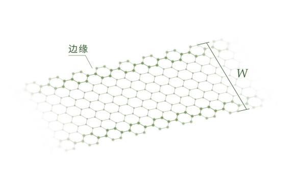

半导体器件研究 · 香港科技大学
器件物理。
聚焦边缘。
我是 彭治荣，目前在香港科技大学攻读博士，研究材料的微观细节如何影响晶体管的工作方式。
我的研究贯穿原子边缘、量子输运与器件工程，同时结合建模和实验经验。
香港 / 预计 2027 年 6 月博士毕业
尺度之间

二维纳米片准一维纳米带
研究问题
晶体管究竟能做到多小？
研究方法
物理机制、建模与实验
研究方向
先进晶体管研发
微小结构。
器件问题。
什么限制了晶体管继续变窄？如何设计它的边缘？我从基础物理机制出发，寻找器件设计中的可行选择。
01
边缘工程让环境选择稳定的边缘
连接硫环境、稳定边缘终止结构与晶体管性能。
让环境选择稳定的边缘
连接硫环境、稳定边缘终止结构与晶体管性能。
研究问题
不同硫环境下，哪些原子级边缘终止结构更稳定？这些结构又如何影响场效应晶体管的工作？
02
器件尺寸缩减当边缘开始主导输运
MoS₂ 纳米带场效应晶体管中的宽度缩减、边缘漏电与注入势垒。
当边缘开始主导输运
MoS₂ 纳米带场效应晶体管中的宽度缩减、边缘漏电与注入势垒。
研究问题
当沟道缩窄为纳米带时，边缘输运如何改变关态漏电，并限制器件的横向尺寸缩减？
03
载流子注入用边缘工程构建冷金属注入源
面向二维场效应晶体管的边缘工程冷金属注入源。
用边缘工程构建冷金属注入源
面向二维场效应晶体管的边缘工程冷金属注入源。
研究问题
如何通过边缘工程，使锯齿型 MoS₂ 纳米带成为二维晶体管的本征冷金属注入源？
04
器件实验让气体传感器发出警报
将 NO₂ 检测、自加热与声音报警集成在同一器件中。
让气体传感器发出警报
将 NO₂ 检测、自加热与声音报警集成在同一器件中。
研究问题
如何在一个气体传感器中同时实现可靠检测、温度控制与直接报警？